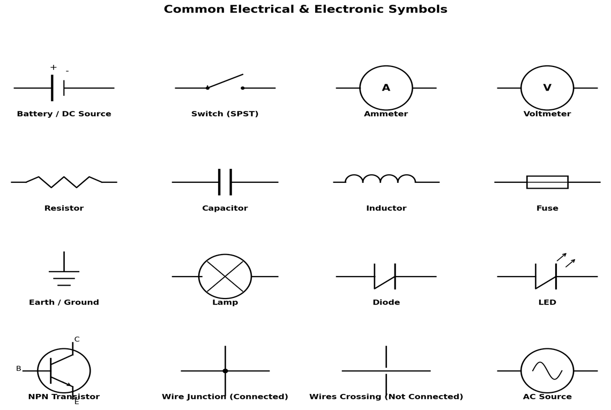
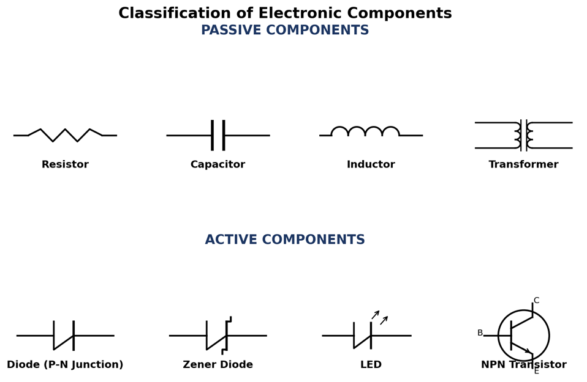
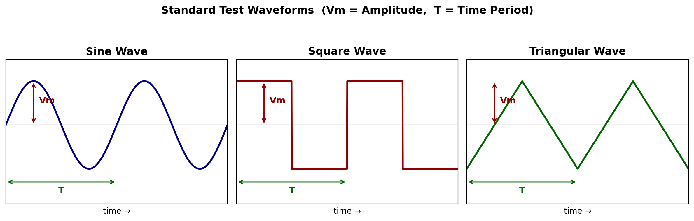
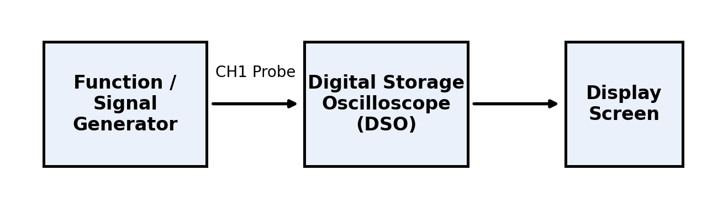
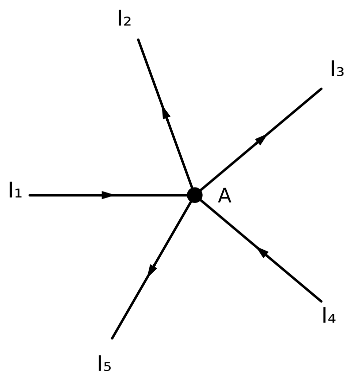
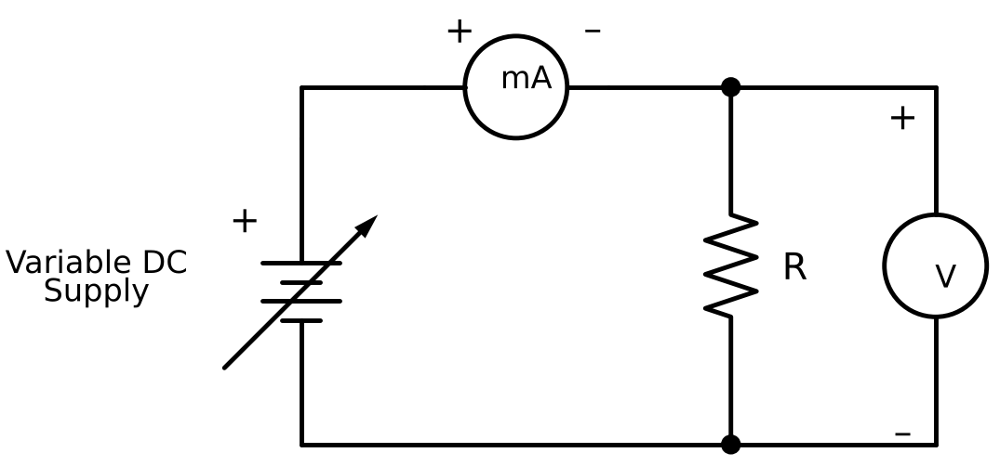
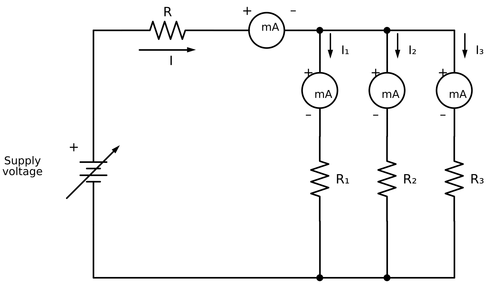
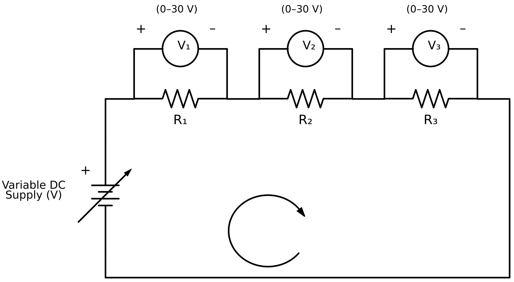

LAB MANUAL — Fundamentals of Electrical & Electronics Engineering
Prepared By Mr. Abhijit S. Shinde, Assistant Professor
Department of First Year Engineering
| Course Code | 261BTFY1105 |
|---|---|
| Semester | I |
| Programme | First Year B.Tech |
| L–T–P | 3–0–2 |
| Credits | 1 |
| Academic Year | 2026–27 |
| Total Practical Hours | 28 |
List of Experiments
| # | Title of Experiment | Hours | Status |
|---|---|---|---|
| 1 | Experiment 1 — Introduction to Electrical Engineering Laboratory Equipment, Symbols & Safety Rules | 2 | Available |
| 2 | Experiment 2 — Identify Active & Passive Electronic Components and Verify Its Values | 2 | Available |
| 3 | Experiment 3 — Measure Amplitude, Time Period and Frequency of Sine, Square & Triangular Wave Using DSO | 2 | Available |
| 4 | Experiment 4 — Verify Ohm's Law, KCL & KVL in DC Electrical Circuits | 2 | Available |
| 5 | Test the Performance of the Given PN Junction Diode | 2 | Not Added |
| 6 | Measure Amplitude, Time Period & Frequency of Half Wave Rectifier Using DSO | 2 | Not Added |
| 7 | Construct Centre Tap Full Wave Rectifier and Measure Input/Output Waveforms Using DSO | 2 | Not Added |
| 8 | Construct Bridge Full Wave Rectifier and Measure Input/Output Waveforms Using DSO | 2 | Not Added |
| 9 | Measure Amplitude, Frequency, Time Period & Vpp of LC Filter Circuit | 2 | Not Added |
| 10 | Measure Amplitude, Frequency, Time Period & Vpp of CLC Filter Circuit | 2 | Not Added |
| 11 | Verify Logic Gates and Interpret Truth Tables (OR, NOT, AND, NAND, NOR, EX-OR & EX-NOR) | 2 | Not Added |
| 12 | Study the 8085 Microprocessor: Block Diagram, Pin Diagram & Applications | 2 | Not Added |
| 13 | Write an ALP to Add, Subtract & Multiply Two 8-bit Numbers | 2 | Not Added |
| 14 | Find 1's & 2's Complement of an 8-bit Number | 2 | Not Added |
Experiments
Experiment No. 1 — Introduction to Electrical Engineering Laboratory Equipment, Symbols & Safety Rules
1. Aim
To familiarise students with the common equipment, instruments, components and standard graphical symbols used in the Electrical and Electronics Engineering laboratory, and to understand the general safety rules to be observed while working in the laboratory.
2. Objectives
- To identify and understand the function of common electrical laboratory equipment and instruments.
- To recognise standard circuit symbols used for electrical and electronic components.
- To learn the correct handling procedure for each instrument.
- To understand general electrical safety rules and precautions to prevent accidents in the laboratory.
- To learn basic first-aid measures for electric shock.
3. Apparatus
Digital Multimeter (DMM), Regulated DC Power Supply (RPS), Digital Storage Oscilloscope (DSO), Function Generator, Breadboard, Analog Ammeter, Analog Voltmeter, LCR Meter, Connecting Wires / Probes, Soldering Iron & Stand, Tool Kit (screwdriver, cutter, plier, tester).
4. Theory
4.1 Brief Description of Key Equipment
Digital Multimeter: A portable instrument capable of measuring AC/DC voltage, current, resistance and checking diode/continuity, selected using a rotary or push-button range selector. It is the most frequently used instrument in the lab.
Regulated Power Supply: Converts AC mains supply into a stable, adjustable DC output, with separate knobs for voltage and current limit control, and is used to energise experimental circuits safely.
Cathode Ray Oscilloscope (CRO): Displays the instantaneous variation of voltage with time on a screen, allowing measurement of amplitude, time period, frequency and phase difference of a signal.
Function Generator: Produces standard test waveforms (sine, square, triangular) with adjustable frequency and amplitude, used to test the response of circuits.
Breadboard: A prototyping board with a grid of interconnected spring clips beneath its holes, allowing components to be inserted and connected without soldering for quick circuit testing.
| S. No. | Equipment / Instrument | Function |
|---|---|---|
| 1 | Digital Multimeter (DMM) | Measures voltage, current, resistance and continuity |
| 2 | Regulated DC Power Supply (RPS) | Provides a variable, regulated DC voltage/current source |
| 3 | Digital Storage Oscilloscope (DSO) | Displays and measures waveform amplitude, frequency & phase |
| 4 | Function Generator | Generates sine, square and triangular test signals of variable frequency |
| 5 | Breadboard | Solderless platform for building and testing temporary circuits |
| 6 | Analog Ammeter | Measures current in a circuit (connected in series) |
| 7 | Analog Voltmeter | Measures potential difference across a component (connected in parallel) |
| 8 | LCR Meter | Measures Resistance, Capacitance, Inductance |
| 9 | Connecting Wires / Probes | Used to make electrical connections between components |
| 10 | Soldering Iron & Stand | Used to make permanent joints between components/wires |
| 11 | Tool Kit (screwdriver, cutter, plier, tester) | General-purpose hand tools for wiring and assembly work |
4.2 Standard Electrical & Electronic Symbols
Every electrical/electronic component is represented on a circuit diagram by a standardized graphical symbol so that circuits can be drawn and interpreted uniformly. Commonly used symbols are shown below.

Fig. 1.1 – Common Electrical and Electronic Symbols
5. General Safety Rules
5.1 Before Starting Work
- Inspect all wires, plugs and instruments for damage before use; never use frayed or damaged cables.
- Ensure the power supply is switched OFF before making or changing any circuit connections.
- Check that the multimeter/ammeter/voltmeter is set to the correct range and function before connecting it to the circuit.
- Wear closed (non-conductive, rubber-soled) footwear; avoid wet hands or wet clothing while working.
- Remove metallic jewellery (rings, chains, watches) before handling live circuits.
5.2 While Working
- Never touch live/bare conductors or terminals with bare hands.
- Connect the circuit completely, get it verified by the faculty/instructor, and only then switch ON the supply.
- Always connect an ammeter in series and a voltmeter in parallel with the circuit element; never connect an ammeter directly across a supply.
- Do not exceed the rated voltage/current of any instrument or component; start with minimum supply value and increase gradually.
- Use only one hand while operating a live circuit, keeping the other hand away from any earthed/grounded object, to avoid a path through the heart.
- Do not overload sockets/extension boards; use a properly earthed 3-pin plug for all equipment.
5.3 After Completing Work
- Switch OFF the power supply and disconnect it before dismantling the circuit.
- Discharge capacitors safely before touching circuit terminals.
- Return all instruments, tools and components to their designated place after use.
- Report any equipment malfunction, spark, unusual smell or overheating to the faculty/lab technician immediately.
5.4 First Aid for Electric Shock
- Immediately switch OFF the mains supply; if not possible, separate the victim from the source using a dry, non-conductive object (wooden stick, dry cloth) — never touch the victim directly.
- Check breathing and pulse; if absent, start CPR immediately and call for medical help.
- Keep the victim warm and lying down; do not give water/food if the person is unconscious.
- Report the incident to the faculty-in-charge and the institute's medical/first-aid centre without delay.
6. General Precautions
- Study the circuit diagram thoroughly and identify all component symbols before wiring the circuit.
- Make all connections neat, tight and along the shortest possible path to minimize the chance of loose contacts.
- Never work on a live circuit; always double-check connections with the supply OFF.
- Handle DSO, function generator and power supply gently; avoid sudden knob movements at extreme settings.
- Note down the least count and range of every measuring instrument before taking readings.
7. Procedure
- Visit each workbench/rack in the laboratory and note down the name, make and rating of every instrument and equipment present.
- Identify the front-panel controls (range selector, knobs, terminals, display) of the multimeter, power supply, CRO and function generator, and note their function.
- Observe and sketch the standard circuit symbol for each basic component listed in Section 3, along with its unit of measurement.
- List the safety rules displayed in the laboratory and note the location of the mains ON/OFF switch, earthing point, fire extinguisher and first-aid box.
- Prepare a laboratory equipment list and symbol chart in the practical record as directed by the faculty.
8. Observation Table
Table 1: Identification of Standard Symbols
| Sr. No. | Component Name | Symbol (to be sketched) | Unit of Measurement |
|---|---|---|---|
| 1 | Resistor | ||
| 2 | Capacitor | ||
| 3 | Inductor | ||
| 4 | Battery / DC Source | ||
| 5 | Switch (SPST) | ||
| 6 | Fuse | ||
| 7 | Ammeter | ||
| 8 | Voltmeter | ||
| 9 | Diode | ||
| 10 | LED | ||
| 11 | NPN Transistor | ||
| 12 | Earth / Ground |
9. Conclusion
The common equipment, instruments and standard symbols used in the Electrical and Electronics Engineering laboratory were studied, and the general safety rules to be followed in the laboratory were understood.
Experiment No. 2 — Identify Active & Passive Electronic Components and Verify Its Values
1. Aim
To identify active and passive electronic components on the basis of physical appearance and terminal characteristics, and to verify their standard/rated values using a Digital Multimeter and LCR meter.
2. Practical Significance
In industries, to build any hardware, it is necessary to identify electronic components, their terminals, values and packaging. Depending on the application, appropriate components need to be selected for better performance. In this experiment, the student will identify active and passive electronic components on the basis of physical verification and basic knowledge about the components. A Multimeter / LCR-Q meter is used to verify the component values.
3. Objectives
- To distinguish between active and passive electronic components based on their operating principle.
- To identify various types of resistors, capacitors, inductors, diodes and transistors by physical appearance.
- To read the standard value of a component from its colour code or printed marking.
- To measure the actual value of a component using a Digital Multimeter and LCR meter.
- To compare the standard and measured values and classify each component as Active or Passive.
4. Apparatus
Active & Passive Electronic Components, Transformer, Digital Multimeter, LCR Meter, Probes etc.
5. Theory
5.1 Active Components
Those devices or components which require an external source for their operation are called Active Components. An active component may provide power gain to a circuit.
Example: Diodes & Transistors
A diode allows current to flow in only one direction (forward biased) and blocks it in the reverse direction; it requires an external bias to operate in a circuit. A transistor is used for amplification and switching applications, and requires an external DC supply to control the larger current/voltage at its output terminals.
5.2 Passive Components
Those devices or components which do not require an external source for their operation are called Passive Components. A passive component does not provide any power gain to a circuit.
Example: Resistor, Capacitor and Inductor
A resistor opposes the flow of current and dissipates energy as heat (measured in Ohms). A capacitor stores energy in the form of an electric field between two plates (measured in Farads). An inductor stores energy in the form of a magnetic field when current flows through it (measured in Henries).
5.3 Identification of Component Values
Standard/rated values of passive components are commonly indicated either by a colour code printed on the component body or by a numeric code, as summarised below.
| Colour | Significant Figure | Multiplier | Tolerance |
|---|---|---|---|
| Black | 0 | ×10⁰ | — |
| Brown | 1 | ×10¹ | ± 1% |
| Red | 2 | ×10² | ± 2% |
| Orange | 3 | ×10³ | — |
| Yellow | 4 | ×10⁴ | — |
| Green | 5 | ×10⁵ | ± 0.5% |
| Blue | 6 | ×10⁶ | — |
| Violet | 7 | ×10⁷ | — |
| Grey | 8 | ×10⁸ | — |
| White | 9 | ×10⁹ | — |
| Gold | — | ×10⁻¹ | ± 5% |
| Silver | — | ×10⁻² | ± 10% |
Ceramic and mica capacitors are usually marked with a 3-digit numeric code (the first two digits are significant figures and the third is the multiplier, giving the value in pF), while electrolytic capacitors have their capacitance and voltage rating printed directly on the body along with polarity markings. Diode and transistor terminals/types are identified using the diode-check and hFE modes of a digital multimeter.
5.4 Classification of Components – Symbols

Fig. 2.1 – Standard symbols of common Active and Passive components
6. Precautions
- Care should be taken while handling terminals of components.
- Select proper range & mode of Multimeter and LCR Meter.
- Connect probes of measuring instrument tightly to terminals of a component.
- Observe correct polarity while testing diodes, LEDs and electrolytic capacitors.
- Avoid touching the metallic tips of the probes with bare hands while taking measurements, as body resistance may affect the reading.
7. Procedure
- Collect the given set of active and passive electronic components from the component tray.
- Visually examine each component and identify its type from its shape, size, colour bands and printed markings.
- Note the standard/rated value of each component from its colour code or printed marking.
- Select the appropriate range and mode (resistance / capacitance / inductance / diode) on the Digital Multimeter or LCR meter.
- Connect the probes of the measuring instrument to the terminals of the component and record the measured value.
- Repeat steps 2–5 for all components listed in the observation table (resistor, capacitor, inductor, diode, transistor, transformer, AC/DC voltage source).
- Classify each component as Active or Passive based on the theory studied.
- Tabulate all observations in the Observation Table.
9. Observation Table
| Sr. No. | Component Name | Type of Component | Standard/Colour Code Value | Measured Value | Active/Passive |
|---|---|---|---|---|---|
| 1 | Resistor | Carbon Composition | |||
| 2 | Capacitor | Ceramic | |||
| Capacitor | Mica | ||||
| Capacitor | Electrolytic | ||||
| 3 | Inductor | ||||
| 4 | Diode | P-N Junction | |||
| Diode | Zener | ||||
| Diode | LED | ||||
| 5 | Transistor | ||||
| 6 | Transformer | ||||
| 7 | Voltage | AC | |||
| Voltage | DC |
10. Conclusion
Based on the above observations, write your conclusion mentioning the components identified, their standard and measured values, and their classification as Active or Passive.
Experiment No. 3 — Measure Amplitude, Time Period and Frequency of Sine Wave, Square Wave, Triangular Wave Using Digital Storage Oscilloscope (DSO)
1. Aim
To measure the amplitude, time period and frequency of a Sine wave, Square wave and Triangular wave using a Digital Storage Oscilloscope (DSO).
2. Practical Significance
In industries, for the manufacture and maintenance of electronic circuits, measurement and testing are a prime requirement. Various parameters are to be tested with utmost accuracy and precision, and for this purpose testing instruments like the DSO are used. Through this experiment, the student will be able to handle the DSO and multimeter efficiently for measuring the amplitude, time period and frequency of a given input signal.
3. Objectives
- To understand the working principle of a Digital Storage Oscilloscope (DSO) and a Function/Signal Generator.
- To identify and distinguish between sine, square and triangular waveforms.
- To measure the amplitude (Vm), time period (T) and frequency (f) of each waveform using a DSO.
- To verify the relation between time period and frequency, f = 1/T.
- To develop proficiency in the correct use of DSO probes and controls.
4. Apparatus
Function/Signal Generator, Digital Storage Oscilloscope, Digital Multimeter, Probes etc.
5. Theory
5.1 Digital Storage Oscilloscope (DSO)
A Digital Storage Oscilloscope (DSO) is an electronic test instrument that captures, stores and displays the input signal in digital form, rather than using analog display techniques. It is the most common type of oscilloscope in use today because of the advanced trigger, storage, display and measurement features it typically provides. A DSO stores the signal/waveform in digital memory, which also allows digital signal processing techniques to be applied to it. The traces on a DSO are bright, highly defined, and displayed within seconds.
5.2 Function / Signal Generator
A signal generator is a piece of electronic test equipment used to generate different types of waveforms over a wide range of frequencies. Signal generators are capable of producing repetitive waveforms such as sine, square and triangular waves, as described below.
5.3 Types of Waveforms
Sine wave: A signal generator will normally have the capability to produce a standard sine wave output. This is the standard waveform that oscillates between two levels with a standard sinusoidal shape.
Square wave: A square wave consists of a signal moving directly between high and low levels.
Triangular wave: A triangular wave is a periodic, non-sinusoidal waveform characterised by linear, symmetric rising and falling ramps, resembling a series of triangles.

Fig. 3.2 – Sine, Square and Triangular waveforms with amplitude (Vm) and time period (T) marked
5.4 Waveform Parameters
| Parameter | Meaning | Unit |
|---|---|---|
| Amplitude (Vm) | Maximum value attained by the waveform | Volt (V) |
| Time Period (T) | Time taken to complete one full cycle of the waveform | Second (s) |
| Frequency (f) | Number of cycles completed per second; f = 1/T | Hertz (Hz) |
5.5 Experimental Setup
The output of the Function/Signal Generator is connected to Channel-1 (CH1) of the DSO through a coaxial probe. The DSO displays the waveform on its screen, from which the amplitude, time period and frequency can be read directly using the on-screen grid/cursors or the DSO's automatic measurement function.

Fig. 3.1 – Test setup for waveform measurement
6. Procedure
- Switch ON the Function/Signal Generator and the DSO, and allow both to initialise.
- Connect the output of the Function Generator to Channel-1 (CH1) of the DSO using a coaxial probe.
- Select the Sine wave function on the Function Generator and set the desired frequency and amplitude.
- Adjust the Volts/Div and Time/Div controls on the DSO to obtain a clear, stable display of the waveform on the screen.
- Using the DSO's on-screen grid (or the Auto-measure function), note the amplitude (Vm) and time period (T) of the displayed waveform.
- Calculate the frequency using f = 1/T and record all readings in the observation table.
- Repeat steps 3 to 6 for the Square wave and Triangular wave functions of the signal generator.
- Compare the measured frequency with the frequency set on the signal generator and note the observations.
7. Observation Table
| Sr. No. | Parameter | Sine Wave | Square Wave | Triangular Wave |
|---|---|---|---|---|
| 1 | Amplitude (Vm) | |||
| 2 | Frequency (f) | |||
| 3 | Time Period (T) |
8. Conclusion
Based on the above observations, write your conclusion mentioning the amplitude, time period and frequency measured for each waveform, and how they compare with the values set on the signal generator.
Experiment No. 4 — Verify Ohm's Law, KCL & KVL in DC Electrical Circuits
1. Aim
To verify Ohm's law, Kirchhoff's Current Law (KCL) and Kirchhoff's Voltage Law (KVL) in DC electrical circuits.
2. Practical Significance
Ohm's law and Kirchhoff's laws are the basic tools used to analyse, design and troubleshoot electrical and electronic circuits, from house wiring and battery-operated equipment to control panels and printed circuit boards. Engineers use them to calculate branch currents and voltage drops, to select resistor values and meter ranges, and to locate faults such as open or short circuits. Through this experiment, the student will connect simple series and parallel resistive circuits, use voltmeters and milliammeters correctly, and confirm these laws from measured readings.
3. Objectives
- To state Ohm's law, KCL and KVL and identify the circuit conditions under which each law applies.
- To connect series and parallel DC resistive circuits on the experimental kit with correct meter polarity.
- To measure DC voltage and current using voltmeters, milliammeters and a digital multimeter.
- To verify that the current through a resistor is proportional to the voltage across it and to determine its resistance, R = V / I.
- To verify that the supplied current is equal to the sum of the branch currents (KCL).
- To verify that the supply voltage is equal to the sum of the voltage drops around a closed loop (KVL).
4. Apparatus
| Sr. No. | Apparatus | Range / Specification | Quantity |
|---|---|---|---|
| 1 | Variable DC regulated power supply | 0 – 20 V | 1 |
| 2 | DC milliammeter | 0 – 10 mA | 4 |
| 3 | DC voltmeter | 0 – 30 V | 3 |
| 4 | Digital multimeter (DMM) | — | 1 |
| 5 | Experimental kit (resistor board for Ohm's law, KCL & KVL) | Values as marked on kit | 1 |
| 6 | Connecting wires | — | As required |
5. Theory
5.1 Ohm's Law
Ohm's law states that the current flowing through a conductor is directly proportional to the potential difference applied across its ends, provided the temperature and other physical conditions of the conductor remain constant.
where V is the voltage across the resistor in volt (V), I is the current through it in ampere (A) and R is the resistance in ohm (Ω). If the current is read in milliampere, convert it to ampere before calculating R (1 mA = 10−3 A). For an ohmic (linear) resistor, the graph of V against I is a straight line passing through the origin, and its slope is equal to R. Ohm's law does not apply to non-linear devices such as diodes, transistors and filament lamps whose resistance changes with current.
5.2 Kirchhoff's Laws
Kirchhoff's laws are particularly useful in determining the equivalent resistance of a complicated network of conductors and in calculating the currents flowing in the various conductors. They are two in number: the Current Law and the Voltage Law.
5.3 Kirchhoff's Current Law (KCL)
In any electrical network, the algebraic sum of the currents meeting at a point (junction or node) is zero. In other words, the total current entering a junction is equal to the total current leaving that junction. KCL is based on the law of conservation of electric charge: charge cannot accumulate at a junction.
Consider the case of five conductors meeting at a point A, as shown in Fig. 4.1. Some conductors have currents leading to point A, whereas some have currents leading away from point A. Assuming the incoming currents to be positive and the outgoing currents to be negative:

Fig. 4.1 – Five conductors meeting at junction A
i.e. Incoming current = Outgoing current at the junction. Applying KCL to the experimental circuit of Fig. 4.3, the current I supplied through resistor R divides into three parallel branches R1, R2 and R3, so that:
5.4 Kirchhoff's Voltage Law (KVL)
In any closed path (loop or mesh) of an electrical network, the algebraic sum of the products of current and resistance (IR drops) in each conductor of that path, plus the algebraic sum of the emfs in that path, is zero. In simple words, the sum of the voltage rises is equal to the sum of the voltage drops around a closed loop. KVL is based on the law of conservation of energy.
Sign convention: while tracing the loop, a rise in potential (moving from the − terminal to the + terminal of a source) is taken as positive, and a fall in potential (moving across a resistor in the direction of current) is taken as negative.
Applying KVL to the series circuit of Fig. 4.4 (traced clockwise), with supply voltage V and voltage drops V1, V2 and V3 across R1, R2 and R3 respectively:
where V1 = I R1, V2 = I R2 and V3 = I R3, I being the common series current.
5.5 Summary of Formulae
| Law | Statement | Formula | Unit |
|---|---|---|---|
| Ohm's law | Voltage across a resistor is proportional to the current through it | R = V / I | Ω |
| KCL | Current entering a junction = current leaving it | I = I₁ + I₂ + I₃ | mA |
| KVL | Supply voltage = sum of voltage drops in a closed loop | V = V₁ + V₂ + V₃ | V |
6. Circuit Diagrams
6.1 Verification of Ohm's Law

Fig. 4.2 – Circuit for verification of Ohm's law
Value of resistor used: R = ____________ Ω (from kit marking) / ____________ Ω (measured by DMM)
6.2 Verification of Kirchhoff's Current Law

Fig. 4.3 – Circuit for verification of KCL (Apply KCL to the above circuit: I = I₁ + I₂ + I₃)
Resistor values: R = ________ Ω, R₁ = ________ Ω, R₂ = ________ Ω, R₃ = ________ Ω
6.3 Verification of Kirchhoff's Voltage Law

Fig. 4.4 – Circuit for verification of KVL (Apply KVL to the above circuit: V = V₁ + V₂ + V₃)
Resistor values: R₁ = ________ Ω, R₂ = ________ Ω, R₃ = ________ Ω
7. Procedure
7.1 Part A – Ohm's Law
- Note the value of resistor R from the kit and measure it with the DMM (supply OFF). Record both values below Fig. 4.2.
- Make the connections as per the circuit diagram of Fig. 4.2.
- Keep the supply voltage at zero, get the connections checked and switch ON the supply.
- Increase the supply voltage in small steps. At each step note the voltmeter reading (V) and the milliammeter reading (I) in Table 4.1.
- Take at least six readings, keeping the current within the range of the milliammeter.
- Calculate R = V / I for each reading and find the mean value of R. Plot a graph of V (y-axis) against I (x-axis) on graph paper.
- Reduce the supply voltage to zero and switch OFF the supply.
7.2 Part B – Kirchhoff's Current Law
- Note the values of R, R₁, R₂ and R₃ from the kit and record them below Fig. 4.3.
- Make the connections as per the circuit diagram of Fig. 4.3: one milliammeter in the main line to read the supplied current I, and one milliammeter in each branch to read I₁, I₂ and I₃.
- Keep the supply voltage at zero, check the connections and switch ON the supply.
- Slowly increase the supply voltage (e.g. 5 V, 10 V, 15 V …) such that no milliammeter exceeds its range.
- At each setting, note the readings of all milliammeters (I, I₁, I₂ and I₃) in Table 4.2.
- Repeat for five different supply voltages.
- Calculate I₁ + I₂ + I₃ for each reading and prove that I = I₁ + I₂ + I₃.
- Reduce the supply voltage to zero and switch OFF the supply.
7.3 Part C – Kirchhoff's Voltage Law
- Note the values of R₁, R₂ and R₃ from the kit and record them below Fig. 4.4.
- Make the connections as per the circuit diagram of Fig. 4.4, connecting voltmeters V₁, V₂ and V₃ across R₁, R₂ and R₃ respectively.
- Check the connections and switch ON the supply with the voltage control at zero.
- Slowly increase the supply voltage. Measure the supply voltage V across the supply terminals using the DMM.
- Note the readings of all voltmeters V₁, V₂ and V₃ in Table 4.3.
- Repeat for six different supply voltages.
- Calculate V₁ + V₂ + V₃ for each reading and compare it with the measured supply voltage V.
- Reduce the supply voltage to zero and switch OFF the supply.
8. Observation Tables
Table 4.1 – Verification of Ohm's Law
| Sr. No. | Voltage across R, V (V) | Current through R, I (mA) | Resistance R = V / I (Ω) |
|---|---|---|---|
| 1 | |||
| 2 | |||
| 3 | |||
| 4 | |||
| 5 | |||
| 6 |
Mean resistance R = ____________ Ω Resistance measured by DMM = ____________ Ω
Table 4.2 – Verification of Kirchhoff's Current Law
| Sr. No. | Supplied current I (mA) | Current through R1, I₁ (mA) | Current through R2, I₂ (mA) | Current through R3, I₃ (mA) | Total I₁ + I₂ + I₃ (mA) |
|---|---|---|---|---|---|
| 1 | |||||
| 2 | |||||
| 3 | |||||
| 4 | |||||
| 5 |
Table 4.3 – Verification of Kirchhoff's Voltage Law
| Sr. No. | Supply voltage V (volts) | Voltage drop across R1, V₁ (V) | Voltage drop across R2, V₂ (V) | Voltage drop across R3, V₃ (V) |
|---|---|---|---|---|
| 1 | ||||
| 2 | ||||
| 3 | ||||
| 4 | ||||
| 5 | ||||
| 6 |
9. Calculations
Show one complete calculation for each part using your own readings. Percentage difference = (Measured value − Calculated value) / Measured value × 100%.
Part A – Ohm's Law: R = V / I = ____________
Part B – KCL: I = I₁ + I₂ + I₃ = ____________
Part C – KVL: V = V₁ + V₂ + V₃ = ____________
10. Conclusion
Based on the above observations and calculations, write your conclusion stating whether Ohm's law, KCL and KVL are verified, how closely the measured and calculated values agree, and the possible reasons for any difference (meter errors, resistance of connecting wires and meters, reading errors, etc.).